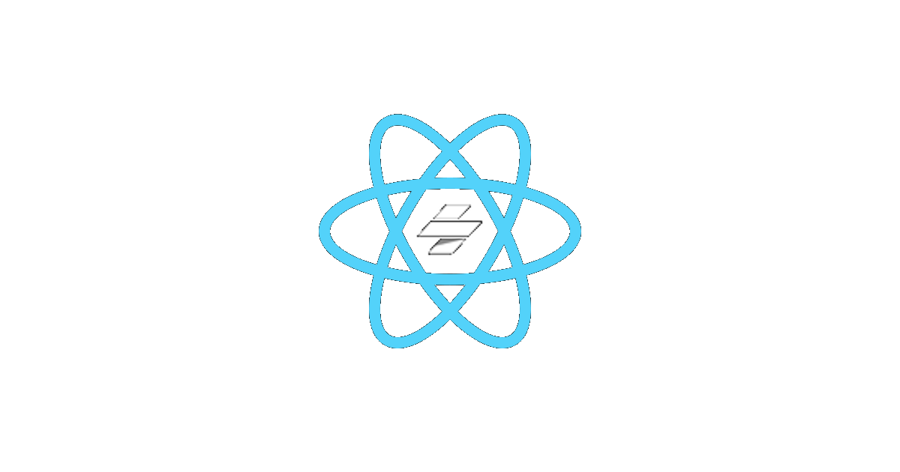

<h2><a href="https://github.com/ionic-team/stencil-ds-plugins">Framework Bindings</a></h2>



<aside class="notes">
  One major Stencil feature is framework bindings as an output target of the build step.
  Web components were created to standardize how custom elements are handled by browsers. While this helps frameworks consume
  web components, it does not ensure full compatibility. If you look at https://custom-elements-everywhere.com,
  you'll see web components have a highly compatible with most frameworks, save for a select few. We’ll see how bindings can help
  some of this incompatibility in the demo.
</aside>